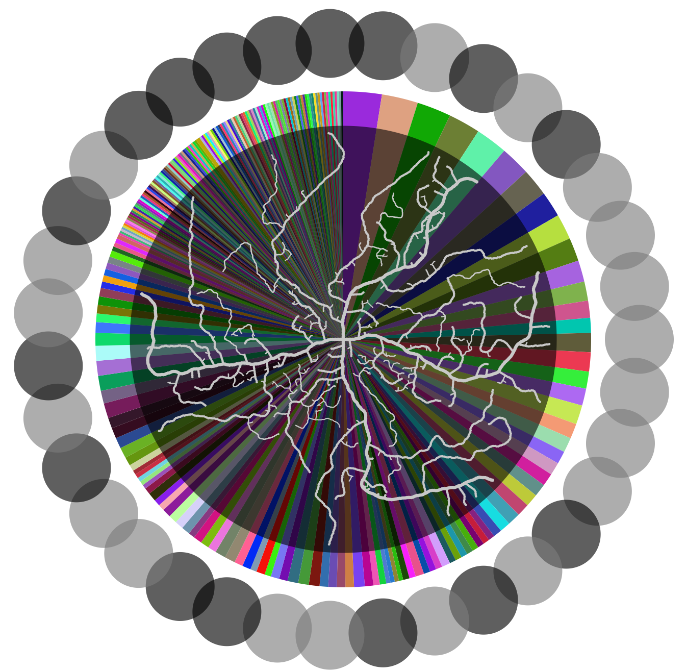

Projects
Task-Based Distributed System

A distributed computing framework based on Hoplite (Zhuang et. al.) that supports asynchronous task submission and promises. Applicable to task-based ML. Project was done on a team of 2.
Human-Tailored Image Classification for Recyclables

A model building on the contrastive learning framework SimSiam (Chen and He) to create a human-tailored image embedding. This work was a component of the larger ScazLabs recycling project.
Novel Clustering Algorithm
A novel unsupervised clustering algorithm using simulated annealing that acheives higher quality clusters than similar competing algorithms.
Explaining Algorithms Through Visuals

Experiments with implementing and applying algorithms to create interesting visuals, meant to hook the viewer in and encourage them to learn more about the underlying algorithm.